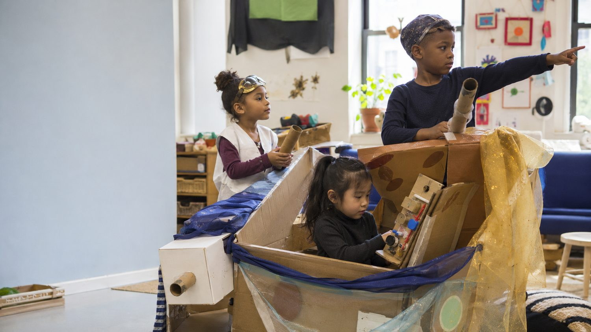

🔎 Spot the support

Inclusive dramatic play gives children opportunities to initiate ideas, negotiate roles, regulate emotions, and cooperate.
Recognize responses that guide children without taking over their thinking.
Initiative, self-regulation, identity, family contexts, peer play, and prosocial development
Maya observes a preschool classroom during dramatic play. One child puts on a firefighter hat and announces, “I’m in charge of the rescue!” Another child replies, “Girls can’t be firefighters.” The teacher responds calmly with inclusive examples and keeps the play open to everyone.
Later, a child accidentally knocks over a classmate’s block tower. Instead of assigning blame, the teacher helps both children name their feelings, describe what happened, and make a repair plan. Maya sees initiative, emotion regulation, empathy, identity, and social problem-solving happening in ordinary classroom moments.
The teacher provides limits without shaming either child. Maya recognizes that young children build confidence and self-control through guided participation—not by being left completely alone and not by having adults solve every problem for them.

Inclusive dramatic play gives children opportunities to initiate ideas, negotiate roles, regulate emotions, and cooperate.
Recognize responses that guide children without taking over their thinking.
Match each chapter concept with its best description.
A child says, “Girls can’t be firefighters.” Which response best supports healthy identity development?
One important idea I am taking from Chapter 6 is that young children develop confidence and self-regulation when adults…
Initiative develops through opportunities to act, explore, communicate, and repair mistakes within supportive limits.
Did your response connect children’s developing abilities with adult guidance, relationships, identity messages, and classroom context?
Effective support combines warmth, clear expectations, emotion coaching, inclusion, and active participation.